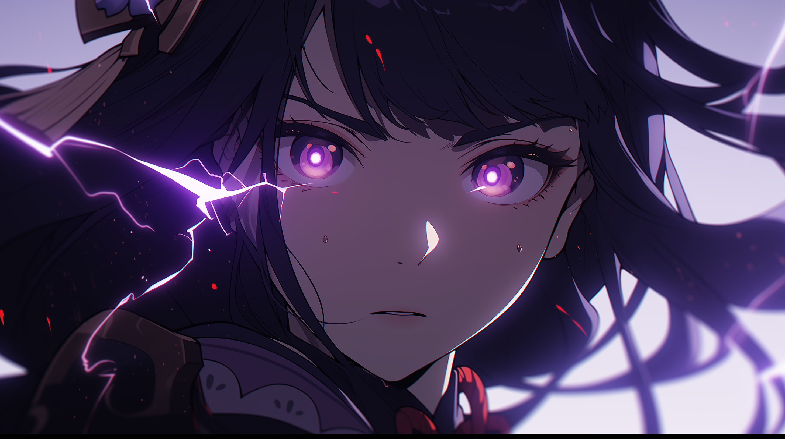

Err0r[ RECORD RECOVERED // PARTIAL ]
ZHAO_
YASH TIWARI
A record with no creation event.
A reference whose ������ cannot be resolved.
The interface cont█████.. inues to return a result.
/// SYSTEM COLLAPSE REPORTERR██_000 // NO RESTORE POINT
LAST CONSISTENT STATE
The index contains six external references. Their timestamps disagree. The checksum is valid only when the record is not being read.
Several empty fields contain data when viewed from outside the process. The process itself reports no █xt█████ observer.
[00:00:01] ROOT INDEX — DELETED[00:00:03] WORLD STATE — UNDEFINED[00:00:07] PLAYER RECORDS — PURGED[00:00:11] MEMORY — FRAGMENTED[00:00:13] EXIT ROUTE — NULL[00:00:17] ZHAO — REMAINING
RECOVERED CONNEC�TIONSSTATUS UNKNOWN
01⌘GITHUBZHAO-SOUP / SOURCE MATERIAL / ACTIVEOPEN ↗
02◈DISCORD752514143013306368 / COMMUNICATION NODEOPEN ↗
03✦STEAMINCONSISTENTHU / SURVIVING GAME DATAOPEN ↗
04+LINKEDINTIWARI-YASH / PROFESSIONAL RECORDOPEN ↗
05◎INSTAGRAMTHIRTYSIXLEGION / VISUAL REMNANTSOPEN ↗
06▶YOUTUBEGENSHINIMPACTER / BROADCAST SIGNALOPEN ↗LAST KNOWN OUTPUT ERR0R
> attempting to reconstruct root... > root does not exist > attempting to reconstruct worl- > world does not exist > attempting to reconstruct user... >E��0r Zha██o Sur█▒█gin███g... > USER FOUND > identity: ZHAO > designation: YASH TIWARI > archive status: ███████░░░ 71% > remaining structure: [links] > remaining memory: [unknown] > restoration: DENIED